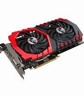

La parte física y tangible del sistema, o sea, sus componentes que podemos tocar.
La parte intangible, digital, abstracta del sistema que manipula datos.
Hardware
En computación e informática, se conoce como hardware al conjunto de los componentes materiales, tangibles, de un computador o un sistema informático. Sus partes son:
- Procesador:
Es el cerebro del sistema. Procesa todo lo que ocurre en la PC y ejecuta todas las acciones que existen.
- Memoria RAM:
Memoria principal del dispositivo donde se almacenan de forma temporal los datos de los programas usados en el momento.
- Tarjeta Madre:
La tarjeta madre, es la placa principal en la estructura interna del computador donde se encuentran los circuitos electrónicos, el procesador, las memorias y las conexiones principales.
- Fuente de Poder:
Es una parte interna de la computadora. Se encuentra generalmente en la parte posterior de la PC. Transforma la energía de entrada en varias mas pequeñas.
- Tarjeta Gráfica:
Está dedicada al procesaiento de datos relacionado con el video y las imagenes que se están reproduciendo en el ordenador.
- Case:
Protege los componentes internos delicados del ambiente exterior y también proporciona un chasis interior o marco en el que la placa base, discos duros, ventiladores y otros componentes se pueden montar con seguridad.
Software
El término software es un vocablo inglés que fue tomado por otros idiomas y designa a todo componente intangible (y no físico) que forma parte de dispositivos como computadoras, teléfonos móviles o tabletas y que permite su funcionamiento.
- Software de Aplicación:
Programas diseñados para realizar una o más tareas específicas a la vez, pueden ser automáticos o asistidos. Por ejemplo: videojuegos o reproductores multimedia.
- Software de Sistemas:
Programas que dan al usuario la capacidad de relacionarse con el sistema, para ejercer control sobre el hardware. El software de sistema también se ofrece como soporte para otros programas. Por ejemplo: sistemas operativos o servidores.
- Drivers:
Los drivers o controladores son el software que se instala en el equipo con el objetivo de que se ejecute como un intermediario entre el sistema operativo y el hardware. Los drivers/controladores son elementos imprescindibles para que el sistema operativo pueda reconocer de forma correcta los componentes que se agregan al computador.
- Paquetes de Software:
Un paquete de software es un conjunto de componentes de software que se agrupan para formar una solución de software completa. Un paquete de software suele incluir un programa de instalación, un conjunto de archivos de configuración y un conjunto de bibliotecas y herramientas.
- Lenguaje de programación:
En informática, se conoce como lenguaje de programación a un programa destinado a la construcción de otros programas informáticos. Su nombre se debe a que comprende un lenguaje formal que está diseñado para organizar algoritmos y procesos lógicos que serán luego llevados a cabo por un ordenador o sistema informático, permitiendo controlar así su comportamiento físico, lógico y su comunicación con el usuario humano.
- Sistema Operativo:
El sistema operativo es el software que coordina y dirige todos los servicios y aplicaciones que utiliza el usuario en una computadora, por eso es el más importante y fundamental. Se trata de programas que permiten y regulan los aspectos más básicos del sistema. Los sistemas operativos más utilizados son Windows, Linux, OS/2 y DOS.